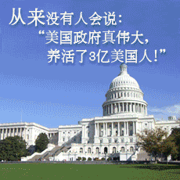

Conversation with 81184027 at Sun 10 Aug 2014 11:41:27 AM CST on 154115835 (webqq)
(11:41:53 AM) 光: 由于少数人的贪欲就会让多数人被卷入是非中
(11:42:19 AM) 光: 多数人的贪欲就会将人类社会卷入自我毁灭中
(11:45:40 AM) 苹果: 温饱解决还要奔小康，有钱了还想更有钱
(11:43:43 AM) 光: 发达国家的贪欲，就会让发展中国家的人口陷于贫困
(11:44:12 AM) 光: 这种贪欲表现在对资源的过度掠夺中
(11:44:42 AM) 光: 和永远还不清的债务
(11:48:07 AM) 上善若水: 人类能否完全把控我们的未来？
(11:45:21 AM) 光: 而贫穷导致了犯罪率的升高
(11:45:43 AM) 光: 因为他们失去了通过正当途径生存的可能性
(11:46:33 AM) 光: 而犯罪最终将全人类卷入无底深渊
(11:49:58 AM) 心理师仲老师: :beer:
(11:48:41 AM) 光: http://movie.douban.com/subject/1292208/
(11:49:04 AM) 光: 这是一部关于犯罪的片子，上帝之城
(11:54:16 AM) 苹果: 晚上电脑看
(11:51:27 AM) 光: 嗯
(11:58:24 AM) 小绵羊: 我以为是上帝十诫运动(邪教)呢?应该也会涉及!
(11:56:06 AM) 光: 巴西里约热内卢的贫民窟，这里是“上帝之城”，更是魔鬼也会叹息着转身的地方。
阿炮（Alexandre Rodrigues 饰）带着我们到了这里，他见证了这里二十多年来被残暴、贪婪、复仇、野心、背叛、掠夺所裹挟的混乱生活以及最终导致的一场灾难性的黑帮争斗。虽然从小就要辗转于匪徒间求生存，但胆小怕事的性格与自我保护的本能却使他一直能平安度日。
60年代初，阿毛、阿夹和阿呆是这里的“少年三侠”，在抢劫完旅馆之后，他们三人分道扬镳，阿夹重回上帝的怀抱，而阿呆和阿毛纷纷付出了生命的代价。
70年，当年“少年三侠”手下的小弟小豆子（Douglas Silva 饰）靠着自己的心狠手辣，不停地吞并别人的地盘，成为了贫民区的“小霸王”，生意也从抢劫升级到了更为暴利的毒品买卖，和他一起飞黄腾达的还有班尼（Phellipe Haagensen 饰）。
班尼认识了美丽的安迪丽卡（Alice Braga 饰），准备归隐，在送别的晚会上，他意外被对头杀害，悲痛之下，“小霸王”集合人手给班尼报仇，帮派之间的厮杀就此开始。
此时的阿炮，机缘巧合下成为了杂志社的见习摄影师，他的相机，照下的却是孩子们持枪核弹的狰狞，和帮派间无休无止的仇杀。
(11:58:15 AM) lost message from #193474 to #193474
(12:01:10 PM) 小绵羊: 哎!社会，人生，……
(12:05:40 PM) 苹果: 我们也是生活在历史的进程中……
(02:41:09 PM) 蛋包飯: 
(02:41:16 PM) 蛋包飯:
(02:55:27 PM) 醒悟: :D中国人的思路不正常拍马屁，明明自己挣钱养活自己非要说老板养国家养
(02:53:29 PM) 光: 不但养自己
(02:53:37 PM) 光: 还养国家，养老板
(02:54:08 PM) 光: 养国家和老板的小蜜
(02:57:22 PM) 醒悟: 被人用了还要谢主龙恩
(02:54:33 PM) 光: 嗯
(02:54:38 PM) 光: 集体主义是这样的
(02:55:53 PM) 光: 做事情错了要归自己，对了有成绩要说领导英明
(02:56:01 PM) 光: 不然没法混
(02:56:13 PM) 光: “不懂做人”
(02:57:22 PM) 光: 领导高升，自己才会受到提拔
(02:57:43 PM) 光: 升迁不是靠能力
(02:58:01 PM) 光: 而是靠懂的逢迎
(02:59:29 PM) 光: 所以郭美美为什么能够风生水起，原因就是如此，她是领导的蜜
(03:02:00 PM) 光: 现在出了篓子，就要一人扛起了
(03:02:18 PM) 光: (02:55:53 PM) 光: 做事情错了要归自己，对了有成绩要说领导英明
(02:56:01 PM) 光: 不然没法混
(03:03:47 PM) 光: 后台不倒，将来可能重罪轻判，后台倒了，就没有出头之日了
(03:03:53 PM) 光: 这个道理中国人都懂
(03:07:22 PM) 醒悟: 嗯!中国特色
(03:04:32 PM) 光: 嗯
(03:32:26 PM) 光: 多了！贪官退赃90万却被返还30万
深圳大鹏新区葵涌街道原党工委委员、综合执法队队长张庆云涉嫌受贿案开审 日期：[2014年8月8日] 版次：[SA05] 版名：[主页] 稿源：[南方都市报] 南 都讯 记者李亚坤 通讯员孟广军 深圳市原大鹏新区葵涌街道党工委委员、综合执法队队长张庆云涉嫌受贿一案，昨日在福田区人民法院开庭审理。张庆云归案 后，主动退赃90万元，但最终被指控收受贿赂人民币19万元、港币30万元。此后张庆云多退的赃款又被返还给张庆云本人，目前已返30万元。 被控受贿人民币19万港币30万 2007年2月开始，张庆云担任深圳市大鹏新区葵涌街道党工委委员兼综合执法队(后改名为规划土地监察队)队长，负责查处违法建筑等工作。 检方指控，2008年至2012年期间，张庆云利用职务之便，为徐某华、郭某明、林某荣、冼某光、薛某明、黄某明等人谋取利益，收受该六人贿赂款共计现金人民币19万元、港币30万元。 其 中行贿人徐某华为深圳市云爆市政工程有限公司法人代表，该公司承揽葵涌街道拆违工程。徐某华通过虚报工作量，虚增施工成本非法获利，张庆云作为拆违工作量 审核的主要负责人明知徐某华的违法行为，仍予以批准。为此徐某华从2009年到2012年分三次行贿张庆云人民币4万元，港币30万元。 交代诸多纪委没掌握的问题 据悉，深圳市纪委通过违建业主林某荣，掌握了张庆云的犯罪线索。2013年8月1日，张庆云被市纪委工作人员从办公室带走。张庆云先后交代多宗受贿事实。 昨日庭审现场，张庆云对公诉机关指控的犯罪事实，以及出示的证据，均表示无异议。他在法庭上几乎无话，一度又哽咽，称收了钱睡觉都睡不好，表示悔罪。 归案之后，张庆云退赃达到90万元，此后多退的钱财也被返还。张庆云的辩护人认为张庆云被纪委带走后，交代了诸多纪委没有掌握的问题，有自首情节。 不过法官当庭就表示，根据最高检和最高人民法院的相关司法解释，类似被掌握犯罪线索后交代的情形不能认定是自首，但可从轻处理。至于张庆云是否能认定为自首，则需要合议庭合议。
(03:32:37 PM) 光: http://epaper.oeeee.com/H/html/2014-08/08/content_2143018.htm
(03:39:31 PM) 光:
北京合法报刊亭遭强拆 媒体呼吁政府给解释(图)
2014-08-10 05:45:12 来源: 人民网(北京) 有680人参与
分享到
北京合法报刊亭遭强拆 媒体呼吁政府给解释(图)
北京合法报刊亭遭强拆
北京合法报刊亭遭强拆 媒体呼吁政府给解释(图)
北京合法报刊亭遭强拆
人民网【#北京合法报刊亭遭强拆# 摊主无处索赔】中午口头通知，深夜就来人拆除，没有给亭主出示任何文件依据，也没有说明缘由。"亭主如果敢反抗，就被拘留了。"如今实施强拆的负责单位尚未找到，损失由亭主自行承担。一夜之间，报刊亭主变成无业人员。@北京发布，能给个解释吗？
人民网 #北京合法报刊亭遭强拆#【市政市容委：无大规模拆除规划 系各区自行行为】@法治周末记者8月4日致电北京市市政市容管理委员会，得到的答复是：市政市容委确实要求对报刊亭进行整治，但主要集中在“不违规卖水、食品”等方面，并没有大规模拆除报刊亭的规划，拆除系各区自行行为。
(03:39:42 PM) 光: http://news.163.com/14/0810/05/A3903EL90001124J.html
(03:41:17 PM) lost message from #193503 to #193505
(03:44:11 PM) 蛋包飯: 强拆无处不在
(03:44:39 PM) 福建-福州&水浒: :撇嘴:
(03:45:31 PM) 福建-福州&水浒: 强盗强插
(03:55:31 PM) 小绵羊: 还不是"容忍"问题，没有容忍，只有争斗，亦即没有自由!
(03:56:20 PM) 光: 中央巡视组巡查21省 房地产业腐败高达95% 2014-08-04 16:13:20 来源: 中国经济周刊(北京) 有15734人参与 分享到 根据中央巡视组的反馈情况和各地方的整改通报，整体上看，在前三轮被巡视的21个省份中，有20个省份发现了房地产业腐败，占比达95%。作为房地产业的主管部门之一，国土资源部被发现的问题有：对权力监督制约不到位，对违纪违法案件查处不力。 在7月16日召开的2014年中央第二轮巡视工作动员部署会上，中共中央政治局常委、中央纪委书记、中央巡视工作 领导小组组长王岐山指出，当前目标是遏制腐败蔓延势头，保持高压态势，哪里问题集中就巡视哪里，谁问题突出就巡视谁。在腐败问题上，要紧盯矿产资源、土地 出让、房地产开发、工程项目、惠民资金和专项经费管理等方面的突出问题。可见，当前官员腐败问题主要集中在上述6个方面，其中，房地产业占了两席：土地出让、房地产开发。2013年以来，中央已部署了三轮巡视。今年7月，2014年中央第二轮巡视启动，这也是十八大以来的第四轮中央巡视。有公开统计数据显示，截至7月下旬，中央前三轮巡视的34个地区、单位中，有19名省部级官员在中央巡视组进驻后落马，其中，不少高官的落马与房地产业密不可分。中央巡视组在哪些省份发现了房地产腐败？房地产腐败如何发生？可否通过专项巡视遏制地产腐败的频发？p24p24-1中央巡视组发现的房地产腐败2013年中央巡视组第一轮巡视地区内蒙古在矿产资源、土地使用、房地产开发、工程招投标等领域腐败问题比较突出，牵涉到领导干部的案件时有发生。湖北一些领导干部利用插手工程项目招投标、国有土地出让、招商引资等贪污受贿比较突出。重庆根据巡视组反馈，严厉查处工程建设、征地拆迁等重点领域的案件，严厉查处发生在群众身边、损害群众利益的“苍蝇”式腐败案件。贵州在党风廉政建设方面，贵州省少数领导干部搞权钱交易；由于缺乏严格有效的监督制约措施，导致工程建设、矿产开发、土地出让等领域腐败案件易发多发。2013年中央巡视组第二轮巡视地区吉林在党风廉政建设方面，吉林省国企改制、土地征用、工程建设等领域和个别单位腐败问题易发多发；此外还存在着超标准建设、装修办公用房。山西做好中央巡视组移交问题线索的核查工作，深入查处煤焦、交通、土地等重点领域腐败案件。安徽少数领导干部在房地产开发、矿产资源、工程建设领域和选人用人等方面以权谋私等。湖南有些领导干部与私营业主搞权钱交易，插手工程项目建设和国有土地出让，利用职权和职务影响为亲属子女经商提供便利，损害国家和群众利益，作风转变不很到位，兴建楼堂馆所。广东一些领导干部与私营企业主勾肩搭背搞权钱交易，插手土地转让、矿产资源开发、工程建设项目招投标，利用职权和职务影响为配偶、子女、亲属及特定关系人谋取不正当利益。云南工程建设、矿产开发、土地使用以及教育、医疗、社会管理等领域腐败案件易发多发。2014年中央巡视组第一轮巡视地区福建土地开发领域腐败问题突出，教育、医疗、政法和环保部门违纪违法问题频发，一些领导干部与商人交往过密。新疆矿产资源和土地开发领域腐败问题反映依然强烈，一些领导干部以权谋地，领导干部亲属违规经商办企业问题突出。
(03:56:29 PM) lost message from #193511 to #193513
(03:59:24 PM) 小绵羊: 以前看新闻有说真正的自行车王国是丹麦，有专用自行车道，允许携自行车乘公交!
(03:56:38 PM) 光: 根据中央巡视组的反馈情况和各地方的整改通报，整体上看，在前三轮被巡视的21个省份中，有20个省份发现了房地产业腐败，占比达95%。
(03:56:50 PM) 光: http://money.163.com/14/0804/16/A2QLL9RV00252G50.html?from=tagtop
(04:54:11 PM) pastorqi: 8月10日,2014年第222天
天天主恩惠,福满溢灵程!
愿我们收获活水吗哪，向神发出感谢赞美
旧约 拉 10：
诗 31：9-18
箴 21：3
新约 林前 6：
(05:22:31 PM) lost message from #193518 to #193518
(05:25:26 PM) 福建-福州&水浒: 最新网络主打歌
〈同桌的你〉
永康版
明天你是否会想起昨天车祸的前妻，
明天你是否还惦记曾经有九百亿家底。
老师们都已想不起你学的是地球物理，
我也是因为薄熙来才想起同桌的你。
谁嫁了维稳沙皇的你？
谁与你断绝了关系？
谁举报了祸国殃民的你？
谁又被寻衅滋事关起？
你从前总是很小心还有三个带婊罩你，
你也曾无意中说起喜欢和央视主播在一起。
那时候天总是很蓝日子总过得太慢，
你总说秦城遥遥无期转眼就各奔东西。
谁拆了屁民的房子？
谁抢了他们的土地？
谁看了老百姓的举报信？
谁把它丢在风里？
从前的日子都远去我也会有我的任期，
我也会继续打老虎给党猿讲违纪的你。
谁导致冤案多起？
谁成了党的难题？
谁将你光头剃起？
谁给你穿上囚衣？
啦………